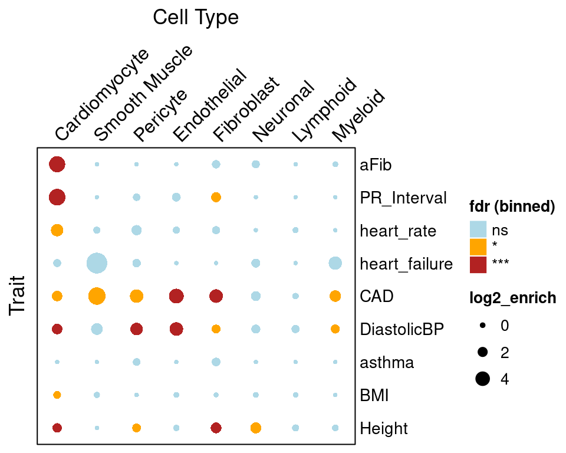

Last updated: 2022-04-22
Checks: 7 0
Knit directory: analysis_pipelines/
This reproducible R Markdown analysis was created with workflowr (version 1.7.0). The Checks tab describes the reproducibility checks that were applied when the results were created. The Past versions tab lists the development history.
Great! Since the R Markdown file has been committed to the Git repository, you know the exact version of the code that produced these results.
Great job! The global environment was empty. Objects defined in the global environment can affect the analysis in your R Markdown file in unknown ways. For reproduciblity it's best to always run the code in an empty environment.
The command set.seed(20200524) was run prior to running the code in the R Markdown file. Setting a seed ensures that any results that rely on randomness, e.g. subsampling or permutations, are reproducible.
Great job! Recording the operating system, R version, and package versions is critical for reproducibility.
Nice! There were no cached chunks for this analysis, so you can be confident that you successfully produced the results during this run.
Great job! Using relative paths to the files within your workflowr project makes it easier to run your code on other machines.
Great! You are using Git for version control. Tracking code development and connecting the code version to the results is critical for reproducibility.
The results in this page were generated with repository version 4bcdf12. See the Past versions tab to see a history of the changes made to the R Markdown and HTML files.
Note that you need to be careful to ensure that all relevant files for the analysis have been committed to Git prior to generating the results (you can use wflow_publish or wflow_git_commit). workflowr only checks the R Markdown file, but you know if there are other scripts or data files that it depends on. Below is the status of the Git repository when the results were generated:
Ignored files:
Ignored: .Rhistory
Ignored: .Rproj.user/
Ignored: scripts/
Untracked files:
Untracked: analysis/test_sldsc_splicingAnnot.Rmd
Untracked: code/sldsc_annot_generic_baselineLD_separate.sbatch
Unstaged changes:
Modified: analysis/sldsc_example_GTEx_QTLs.Rmd
Note that any generated files, e.g. HTML, png, CSS, etc., are not included in this status report because it is ok for generated content to have uncommitted changes.
These are the previous versions of the repository in which changes were made to the R Markdown (analysis/mapgen_torus_enrichment_heart_atlas.Rmd) and HTML (docs/mapgen_torus_enrichment_heart_atlas.html) files. If you've configured a remote Git repository (see ?wflow_git_remote), click on the hyperlinks in the table below to view the files as they were in that past version.
| File | Version | Author | Date | Message |
|---|---|---|---|---|
| Rmd | 4bcdf12 | kevinlkx | 2022-04-22 | fixed bugs in run_torus() return values and added torus_input_dir for prepare_torus_input_files() |
| html | db1ff60 | kevinlkx | 2022-04-19 | Build site. |
| Rmd | 39e9a66 | kevinlkx | 2022-04-19 | wflow_rename("analysis/torus_enrichment_heart_atlas.Rmd", "analysis/mapgen_torus_enrichment_heart_atlas.Rmd") |
| html | 39e9a66 | kevinlkx | 2022-04-19 | wflow_rename("analysis/torus_enrichment_heart_atlas.Rmd", "analysis/mapgen_torus_enrichment_heart_atlas.Rmd") |
Here we show an example of performing enrichment analysis on AFib GWAS data using mapgen with TORUS.
Here we use scATAC-seq DA peaks for each cell type as a separate annotation (univariate).
This example is based on the R script from Alan
suppressMessages(library(liftOver))
suppressMessages(library(ComplexHeatmap))
library(mapgen)data.dir <- '/project2/gca/Heart_Atlas/reorganized_data/example_data'Load GWAS summary statistics of AFib
gwas.sumstats <- readRDS(paste0(data.dir, '/GWAS/ebi-a-GCST006414_aFib.df.rds'))
head(gwas.sumstats)Prepare annotations for TORUS
# load DA peaks (in hg38)
markers <- readRDS(paste0(data.dir, '/ATAC_seq/PeakCalls/DA_MARKERS_FDRP_1_log2FC_1.rds'))
# liftover peaks from hg38 to hg19
path <- system.file(package="liftOver", "extdata", "hg38ToHg19.over.chain")
ch <- import.chain(path)
markers.hg19 <- lapply(markers, function(x){unlist(liftOver(x, ch))})
system('mkdir -p Torus/bed_annotations_hg19')
# save to bed format
for(i in 1:length(markers.hg19)){
seqlevelsStyle(markers.hg19[[i]]) <- "NCBI"
}
lapply(names(markers.hg19), function(x){
rtracklayer::export(markers.hg19[[x]],
format = 'bed',
con = paste0(data.dir, '/Torus/bed_annotations_hg19/', x,'_narrowPeaks.bed'))})
annotations <- list.files(path = paste0(data.dir, '/Torus/bed_annotations_hg19'), pattern = '*.bed', full.names = T)Run TORUS for each annotation separately
enrich.res <- vector('list', length(annotations))
names(enrich.res) <- basename(annotations)
for(i in seq_along(annotations)){
annot.name <- gsub('_narrowPeaks*', '', tools::file_path_sans_ext(basename(annotations[i])))
# Make TORUS input data
torus.files <- prepare_torus_input_files(gwas.sumstats,
annotations[i],
torus_input_dir = paste0(data.dir, '/Torus/input'))
# Estimates enrichment using TORUS
torus.result <- run_torus(torus.files$torus_annot_file,
torus.files$torus_zscore_file,
option = "est", torus_path = "torus")
enrich.res[[i]] <- torus.result$enrich
}
# saveRDS(enrich.res, 'Torus/Torus_univariate_enrichment_result.rds')Compare to pre-computed result
enrich.alltraits.res <- readRDS(paste0(data.dir,'/Torus/Torus_CellType_Enrichment_Results_Univariate_MORE.df.rds'))
stopifnot(identical(enrich.res, enrich.alltraits.res$aFib))Load enrichment results
enrich.res <- readRDS(paste0(data.dir, '/Torus/Torus_CellType_Enrichment_Results_Univariate_MORE.df.rds'))
annotations <- list.files(path = paste0(data.dir, '/Torus/bed_annotations_hg19'), pattern = '*.bed', full.names = T)
pval_from_ci <- function(mean, upper, ci){
nsamp <- length(mean)
pval.res <- rep(0, nsamp)
for(i in 1:nsamp){
alph <- (1-ci)/2
zval <- qnorm(p = 1-alph)
se <- (upper[i]-mean[i])/zval
pval.res[i] <- 1 - pnorm(q = mean[i] / se)
}
return(pval.res)
}
res <- lapply(enrich.res, function(x){ Reduce(x = x, f = rbind)})
res <- lapply(res, function(x){x[x$term != "Intercept",]})
for(i in 1:length(res)){
res[[i]]$pvalue <- pval_from_ci(mean = res[[i]]$estimate, upper = res[[i]]$high, ci = 0.95)
}
estimates <- as.data.frame(sapply(res, function(x){x["estimate"]}))
pvalues <- as.data.frame(sapply(res, function(x){x["pvalue"]}))
fdr <- matrix(p.adjust(unlist(pvalues), method = 'BH'), nrow = nrow(pvalues))
rnames <- basename(annotations)
names.order <- c("aFib", "PR_Interval","heart_rate","heart_failure",
"CAD","DiastolicBP","asthma","BMI","Height")
celltype_ideal_order <- c("Cardiomyocyte","Smooth Muscle","Pericyte","Endothelial","Fibroblast","Neuronal", "Lymphoid","Myeloid")
# celltype_ideal_order <- c("Cardiomyocyte","Pericyte","Endothelial","Fibroblast")
row.names(estimates) <- sub('_narrowPeaks.bed','',rnames)
colnames(estimates) <- names(enrich.res)
estimates <- estimates[celltype_ideal_order,names.order]
estimates <- t(estimates)
row.names(fdr) <- sub('_narrowPeaks.bed','',rnames)
colnames(fdr) <- names(enrich.res)
fdr <- fdr[celltype_ideal_order,names.order]
fdr <- t(fdr)
star.mat <- matrix('ns', nrow = nrow(fdr), ncol = ncol(fdr))
star.mat[fdr < 0.05] <- '*'
star.mat[fdr < 0.0001] <- '***'
rownames(star.mat) <- rownames(fdr)
colnames(star.mat) <- colnames(fdr)
mat.to.viz <- estimates/log(2)
mat.to.viz[mat.to.viz < 0] <- 0Plot enrichment
lgd_list <- list()
col_fun <- c("lightblue", "orange", "firebrick")
names(col_fun) <- c("ns", '*', '***')
lgd_list[["fdr"]] <- Legend(title = "fdr (binned)",
labels = c("ns", '*', '***'),
legend_gp = gpar(fill = col_fun))
tic_vec <- c(0, 2, 4)
lgd_list[["log2_enrich"]] <- Legend(title = "log2_enrich",
labels = tic_vec,
# labels_gp = gpar(fontsize = 14),
grid_height = unit(6, "mm"),
grid_width = unit(6, "mm"),
graphics = list(
function(x, y, w, h)
grid.circle(x, y,
r = (tic_vec[1]/10 + 0.2) * unit(2.5, "mm"),
gp = gpar(fill = "black")),
function(x, y, w, h)
grid.circle(x, y,
r = (tic_vec[2]/10 + 0.2) * unit(2.5, "mm"),
gp = gpar(fill = "black")),
function(x, y, w, h)
grid.circle(x, y,
r = (tic_vec[3]/10 + 0.2) * unit(2.5, "mm"),
gp = gpar(fill = "black"))
))
map1 <- Heatmap(star.mat,
name = "Association Effect Size",
col = col_fun,
rect_gp = gpar(type = "none"),
cell_fun = function(j, i, x, y, width, height, fill) {
grid.rect(x = x, y = y, width = width, height = height,
gp = gpar(col = NA, fill = NA))
grid.circle(x = x, y = y,
r = (mat.to.viz[i, j]/10 + 0.2) * unit(2.5, "mm"),
gp = gpar(fill = col_fun[star.mat[i, j]], col = NA))
},
border_gp = gpar(col = "black"),
row_title = "Trait",
column_title = "Cell Type",
cluster_rows = F, cluster_columns = F,
show_heatmap_legend = F,
row_names_gp = gpar(fontsize = 10.5),
column_names_rot = 45,
column_names_side = "top",
use_raster = T)'magick' package is suggested to install to give better rasterization.
Set `ht_opt$message = FALSE` to turn off this message.draw(map1, annotation_legend_list = lgd_list)
| Version | Author | Date |
|---|---|---|
| 39e9a66 | kevinlkx | 2022-04-19 |
sessionInfo()R version 4.0.4 (2021-02-15)
Platform: x86_64-pc-linux-gnu (64-bit)
Running under: Scientific Linux 7.4 (Nitrogen)
Matrix products: default
BLAS/LAPACK: /software/openblas-0.3.13-el7-x86_64/lib/libopenblas_haswellp-r0.3.13.so
locale:
[1] LC_CTYPE=en_US.UTF-8 LC_NUMERIC=C
[3] LC_TIME=en_US.UTF-8 LC_COLLATE=en_US.UTF-8
[5] LC_MONETARY=en_US.UTF-8 LC_MESSAGES=en_US.UTF-8
[7] LC_PAPER=en_US.UTF-8 LC_NAME=C
[9] LC_ADDRESS=C LC_TELEPHONE=C
[11] LC_MEASUREMENT=en_US.UTF-8 LC_IDENTIFICATION=C
attached base packages:
[1] grid parallel stats4 stats graphics grDevices utils
[8] datasets methods base
other attached packages:
[1] mapgen_0.3.5
[2] ComplexHeatmap_2.6.2
[3] liftOver_1.14.0
[4] Homo.sapiens_1.3.1
[5] TxDb.Hsapiens.UCSC.hg19.knownGene_3.2.2
[6] org.Hs.eg.db_3.12.0
[7] GO.db_3.12.1
[8] OrganismDbi_1.32.0
[9] GenomicFeatures_1.42.3
[10] AnnotationDbi_1.52.0
[11] Biobase_2.50.0
[12] rtracklayer_1.50.0
[13] GenomicRanges_1.42.0
[14] GenomeInfoDb_1.26.7
[15] IRanges_2.24.1
[16] S4Vectors_0.28.1
[17] BiocGenerics_0.36.1
[18] gwascat_2.22.0
[19] workflowr_1.7.0
loaded via a namespace (and not attached):
[1] colorspace_2.0-3 rjson_0.2.21
[3] ellipsis_0.3.2 rprojroot_2.0.2
[5] circlize_0.4.14 XVector_0.30.0
[7] GlobalOptions_0.1.2 fs_1.5.2
[9] clue_0.3-60 rstudioapi_0.13
[11] bit64_4.0.5 fansi_1.0.3
[13] xml2_1.3.3 splines_4.0.4
[15] snpStats_1.40.0 cachem_1.0.6
[17] knitr_1.38 jsonlite_1.8.0
[19] Rsamtools_2.6.0 Cairo_1.5-15
[21] cluster_2.1.2 dbplyr_2.1.1
[23] png_0.1-7 graph_1.68.0
[25] BiocManager_1.30.16 readr_2.1.2
[27] compiler_4.0.4 httr_1.4.2
[29] assertthat_0.2.1 Matrix_1.4-1
[31] fastmap_1.1.0 cli_3.2.0
[33] later_1.3.0 htmltools_0.5.2
[35] prettyunits_1.1.1 tools_4.0.4
[37] gtable_0.3.0 glue_1.6.2
[39] GenomeInfoDbData_1.2.4 dplyr_1.0.8
[41] rappdirs_0.3.3 Rcpp_1.0.8.3
[43] jquerylib_0.1.4 vctrs_0.4.1
[45] Biostrings_2.58.0 xfun_0.30
[47] stringr_1.4.0 ps_1.6.0
[49] lifecycle_1.0.1 XML_3.99-0.9
[51] scales_1.2.0 getPass_0.2-2
[53] zlibbioc_1.36.0 BSgenome_1.58.0
[55] VariantAnnotation_1.36.0 hms_1.1.1
[57] promises_1.2.0.1 MatrixGenerics_1.2.1
[59] SummarizedExperiment_1.20.0 RBGL_1.66.0
[61] RColorBrewer_1.1-3 yaml_2.3.5
[63] curl_4.3.2 memoise_2.0.1
[65] ggplot2_3.3.5 sass_0.4.1
[67] biomaRt_2.46.3 stringi_1.7.6
[69] RSQLite_2.2.11 highr_0.9
[71] BiocParallel_1.24.1 shape_1.4.6
[73] rlang_1.0.2 pkgconfig_2.0.3
[75] matrixStats_0.61.0 bitops_1.0-7
[77] evaluate_0.15 lattice_0.20-45
[79] purrr_0.3.4 GenomicAlignments_1.26.0
[81] bit_4.0.4 processx_3.5.3
[83] tidyselect_1.1.2 magrittr_2.0.3
[85] R6_2.5.1 generics_0.1.2
[87] DelayedArray_0.16.3 DBI_1.1.2
[89] pillar_1.7.0 whisker_0.4
[91] survival_3.3-1 RCurl_1.98-1.6
[93] tibble_3.1.6 crayon_1.5.1
[95] utf8_1.2.2 BiocFileCache_1.14.0
[97] tzdb_0.3.0 rmarkdown_2.13
[99] GetoptLong_1.0.5 progress_1.2.2
[101] blob_1.2.3 callr_3.7.0
[103] git2r_0.30.1 digest_0.6.29
[105] httpuv_1.6.5 munsell_0.5.0
[107] openssl_2.0.0 bslib_0.3.1
[109] askpass_1.1